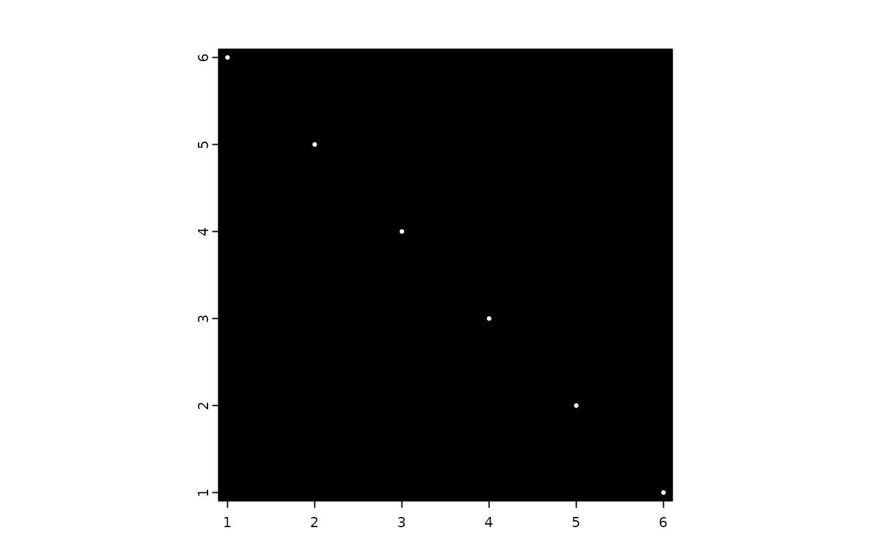

Create a giottoPoints object that is used to represent
subcellular point-type features. The main values are contained within the
spatVector slot, which should contain spatial point data and also an
associated set of attributes for at
least feat_ID (name of the feature being described)
and feat_ID_uniq (a unique integer identifier for each specific point).
Usage
# S4 method for class 'SpatVector'
createGiottoPoints(
x,
feat_type = "rna",
verbose = TRUE,
split_keyword = NULL,
unique_IDs = NULL
)
# S4 method for class 'data.frame'
createGiottoPoints(
x,
x_colname = NULL,
y_colname = NULL,
feat_ID_colname = NULL,
feat_type = "rna",
verbose = TRUE,
split_keyword = NULL,
unique_IDs = NULL
)Arguments
- x
spatVector or data.frame-like object with points coordinate information (x, y, feat_ID)
- feat_type
character. feature type. Provide more than one value if using the
split_keywordparam. For each set of keywords to split by, an additional feat_type should be provided in the same order.- verbose
be verbose
- split_keyword
list of character vectors of keywords to split the giottoPoints object based on their feat_ID. Keywords will be
grepl()matched against the feature IDs information.- unique_IDs
(optional) character vector of unique IDs present within the spatVector data. Provided for cacheing purposes
- x_colname
column name for x-coordinates
- y_colname
column name for y-coordinates
- feat_ID_colname
column name for feature ids
Details
Using the manual option where you can select the names of the x, y, and feat_ID columns is not compatible with a data.frame that already has the names x, y, and/or feat_ID.
Examples
# data.frame input
x <- data.frame(
ID = letters[seq_len(6)],
x = seq_len(6),
y = seq(6, 1)
)
gpoints <- createGiottoPoints(x)
#> Selecting col "ID" as feat_ID column
#> Selecting cols "x" and "y" as x and y respectively
plot(gpoints,
raster = FALSE, # don't plot with rasterization or it will be hard to see
cex = 0.5
)

# with a split_keyword
# Use this when values to read in contain multiple sets of information that
# should be put into separate objects.
gp_list <- createGiottoPoints(x,
feat_type = c("feat_a", "feat_b"),
split_keyword = list(c("b", "c"))
)
#> Selecting col "ID" as feat_ID column
#> Selecting cols "x" and "y" as x and y respectively
force(gp_list)
#> $feat_a
#> An object of class giottoPoints
#> feat_type : "feat_a"
#> Feature Information:
#> class : SpatVector
#> geometry : points
#> dimensions : 4, 2 (geometries, attributes)
#> extent : 1, 6, 1, 6 (xmin, xmax, ymin, ymax)
#> coord. ref. :
#> names : feat_ID feat_ID_uniq
#> type : <chr> <int>
#> values : a 1
#> d 4
#> e 5
#>
#>
#> $feat_b
#> An object of class giottoPoints
#> feat_type : "feat_b"
#> Feature Information:
#> class : SpatVector
#> geometry : points
#> dimensions : 2, 2 (geometries, attributes)
#> extent : 2, 3, 4, 5 (xmin, xmax, ymin, ymax)
#> coord. ref. :
#> names : feat_ID feat_ID_uniq
#> type : <chr> <int>
#> values : b 2
#> c 3
#>
#>
# subsetting
gpoints[c(1, 3)] # numerical
#> An object of class giottoPoints
#> feat_type : "rna"
#> Feature Information:
#> class : SpatVector
#> geometry : points
#> dimensions : 2, 2 (geometries, attributes)
#> extent : 1, 3, 4, 6 (xmin, xmax, ymin, ymax)
#> coord. ref. :
#> names : feat_ID feat_ID_uniq
#> type : <chr> <int>
#> values : a 1
#> c 3
#>
gpoints[c(TRUE, FALSE, FALSE)] # logical
#> An object of class giottoPoints
#> feat_type : "rna"
#> Feature Information:
#> class : SpatVector
#> geometry : points
#> dimensions : 2, 2 (geometries, attributes)
#> extent : 1, 4, 3, 6 (xmin, xmax, ymin, ymax)
#> coord. ref. :
#> names : feat_ID feat_ID_uniq
#> type : <chr> <int>
#> values : a 1
#> d 4
#>
gpoints[c("a", "f")] # character subsetting is keyed on feat_ID attribute
#> An object of class giottoPoints
#> feat_type : "rna"
#> Feature Information:
#> class : SpatVector
#> geometry : points
#> dimensions : 2, 2 (geometries, attributes)
#> extent : 1, 6, 1, 6 (xmin, xmax, ymin, ymax)
#> coord. ref. :
#> names : feat_ID feat_ID_uniq
#> type : <chr> <int>
#> values : a 1
#> f 6
#>
gpoints[] # drop to SpatVector
#> class : SpatVector
#> geometry : points
#> dimensions : 6, 2 (geometries, attributes)
#> extent : 1, 6, 1, 6 (xmin, xmax, ymin, ymax)
#> coord. ref. :
#> names : feat_ID feat_ID_uniq
#> type : <chr> <int>
#> values : a 1
#> b 2
#> c 3